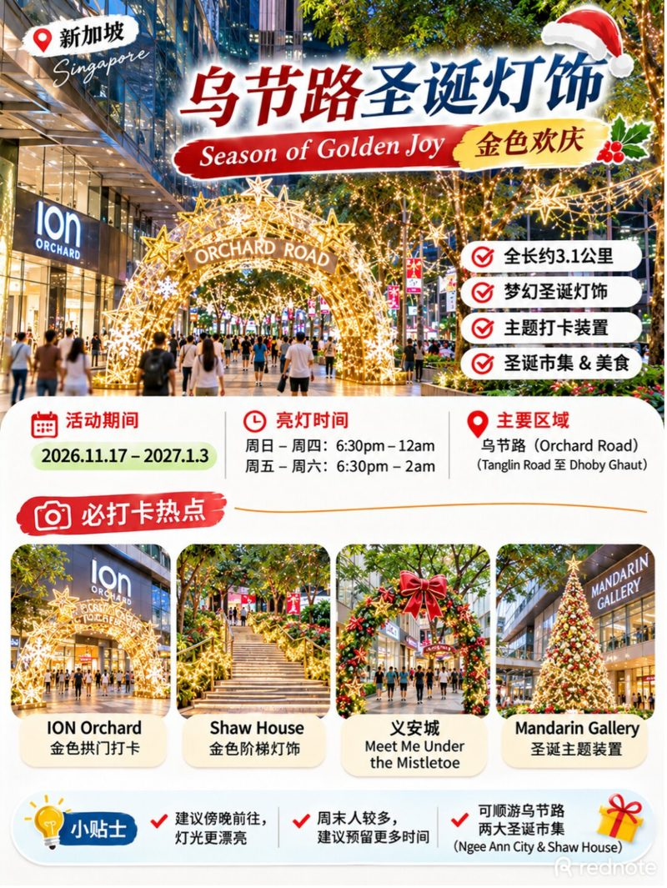
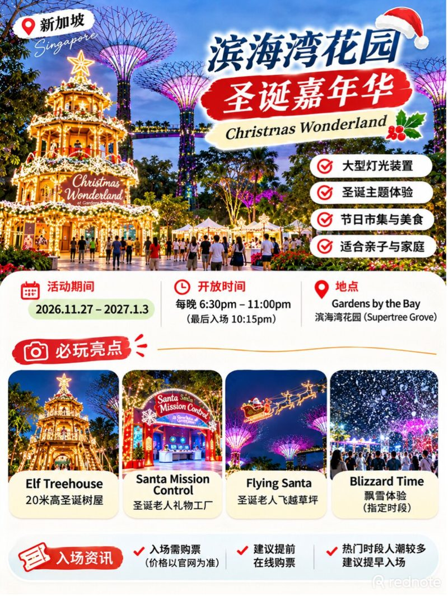
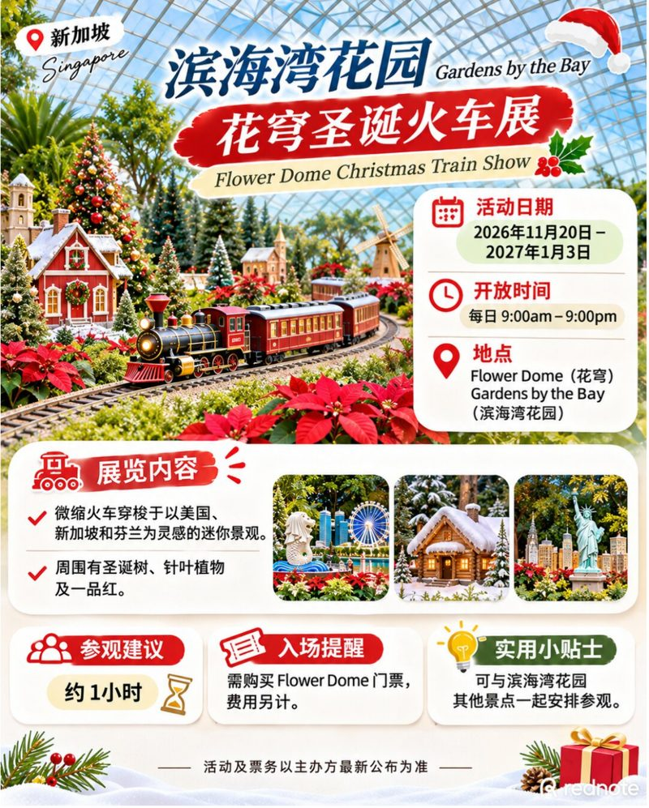
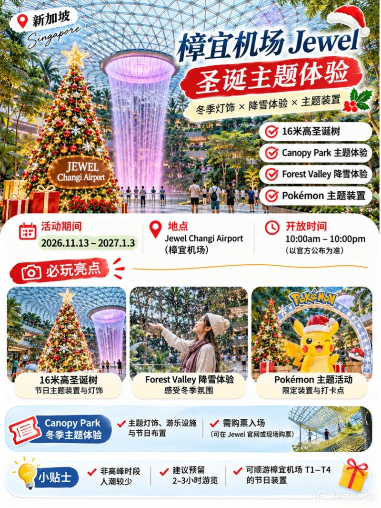
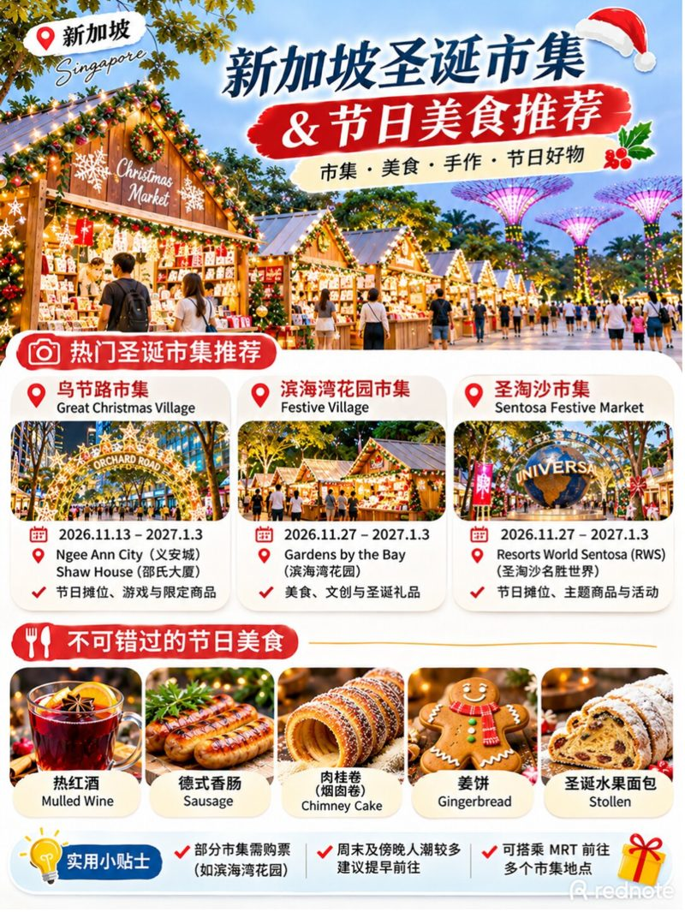

🎄 新加坡聖誕
玩咩好？
12月尾一齊去新加坡，下面係我哋搵到嘅景點同活動。
邊個想去就喺 WhatsApp 回覆代號，例如「想去 A2、B1」。冇固定邊日去邊度，大家揀完先排。
A 聖誕限定（只喺聖誕期間先有）
全部到2027年1月3日。晚上嘅燈同市集最靚，不過細路夜晚要留意體力。



A3花穹聖誕火車展 Flower Dome
11月20日至1月3日，每日早上9:00至晚上9:00。微縮火車穿梭喺迷你景觀之間。要買 Flower Dome 門票。
遊客票價：待確認（官網只列出居民價）。

A4星耀樟宜 Jewel：聖誕樹 ＋ 落雪 ＋ 雨漩渦
11月13日至1月3日。16米高聖誕樹免費睇，晚上有「落雪」表演（約8:05pm，週末加場）。樹上面 Canopy Park 入場 S$8（約HK$48）。
位置喺樟宜機場，由酒店去要搭較長時間（待確認）。最啱喺起飛或抵達嗰日順路去，唔使特登。Pokémon 活動十二月仲有冇：待確認。

A5聖淘沙名勝世界聖誕裝飾 ＋ 市集
11月27日至1月3日。8米聖誕樹同裝飾喺 WEAVE 公共地方，唔使買樂園門票都可以睇。Oceanarium 十二月有水底聖誕表演（每日約3:30pm）。
B 樂園同水族館
呢類要成日或半日時間。細路5歲同10歲，要睇身高限制，所以先問家姐想唔想去。
B1環球影城 Universal Studios Singapore
一日票：平日 大人 S$83（約HK$500）、小童 S$62（約HK$370）。假日大人 S$86、小童 S$64。
聖誕期間有糖果主題聖誕樹同 Jingle Jam 表演，12月22至25日晚有煙花（來自第三方報道）。
身高參考：Transformers、小小兵約 102cm 以上，Revenge of the Mummy 122cm，Battlestar Galactica 125cm。
價錢同時間來自第三方網站（2026年6月更新），「待確認」。快速通行證好貴（約 S$291 一位起）。
B2新加坡海洋館 Oceanarium
大人由 S$55（約HK$330）起，小童（4至12歲）由 S$43（約HK$260）起。
聖誕期間有水底聖誕表演、聖誕老人潛水餵魚。12月5、15、16日全日休館（官網通告）。
B3新加坡纜車 Cable Car
Sky Pass：大人 S$35（約HK$210），小童 S$25（約HK$150）。
價錢同營業時間來自第三方網站，「待確認」。
B4聖淘沙斜坡滑車 Skyline Luge
坐纜椅上山，然後自己揸車沿斜路衝落嚟。細路好鍾意。
年齡同身高（官方）：2至6歲而且身高85至110cm嘅細路，要同大人一齊坐（買「Child Doubling」票）。6歲以上而且高過110cm可以自己坐。110至125cm由家長決定自己坐定同大人一齊坐。5歲細路同大人坐就得，10歲嘅話通常自己可以坐。
三次車（2次纜椅＋3次滑車）約 S$33（約HK$200）一位。
價錢、營業時間同夜間滑車係第三方網站（2026年6月）嘅資料，官網未核實，「待確認」。落毛毛雨照開，打雷閃電同大雨會暫停。建議由官網預約時段，唔好買轉售票。
C 動物
萬態野生動物保育園 Mandai 一帶有幾個，可以揀一至兩個。價錢係遊客價（成人 / 小童），官網「regular days」。
| 代號 | 地方 | 大人 | 小童 |
|---|---|---|---|
| C1 | 新加坡動物園（日間，8:30至18:00） | S$49 | S$34 |
| C2 | 河川生態園 River Wonders（9:00至18:00） | S$45 | S$33 |
| C3 | 夜間動物園 Night Safari（18:00至午夜，要揀時段） | S$58 | S$41 |
| C4 | 飛禽公園 Bird Paradise | S$49 | S$34 |
D 阿媽想影相打卡位
全部都係新加坡標誌性地方，影張相就得，唔使入場。
D1魚尾獅公園 Merlion Park
最經典嘅相。背後係金沙酒店，傍晚或夜晚影更靚。可以同 D2 一齊去。
D2濱海灣金沙酒店 ＋ 濱海灣花園外圍
沿海濱行，可以影到金沙酒店、藝術科學館同蓮花。同 A2 同一區，可以放喺同一晚。
觀景台（Skypark）要買票，價錢待確認。
D3牛車水 Chinatown
傳統店舖、寺廟同小販中心，買手信好方便。聖誕期間通常有燈飾，詳情待確認。
D4克拉碼頭 Clarke Quay ／ 駁船碼頭
河邊彩色建築同餐廳，夜晚好有氣氛。可以食飯順便行。
D5哈芝巷 ／ 甘榜格南（蘇丹回教堂一帶）
色彩繽紛嘅壁畫同小店，好多人影相。
D6星耀樟宜雨漩渦
40米高室內瀑布，晚上有燈光。同 A4 一齊去。
E 輕鬆選擇（唔想趕時間 ／ 落雨）
E1酒店泳池慢慢歎，細路玩水。
E2VivoCity 商場食飯、行街、細路玩樂區（近酒店）。
E3聖淘沙海灘行下，睇聖誕裝飾（A5）。
E4小販中心食本地小食，例如 Maxwell、Lau Pa Sat、Amoy Street。
開放時間同交通時間：待確認。
實用貼士
🚇 搭 MRT 同巴士：用有感應功能嘅 Visa 或 Mastercard 直接拍卡就得。短時間玩唔使買卡。想用通行證：Singapore Tourist Pass 一日 S$17，兩日 S$24，三日 S$29。
官方資料（英文）
🚕 人多或者有細路：叫車（Grab）或者的士較方便。
☔ 十二月係雨季：帶遮同薄外套。室內選擇：A3、B2、E2。
🌙 細路夜晚：5歲細路建議每日只做一件主要嘢，晚上唔好太夜。
🎟️ 要預早買票：A2、B1、C3 同聖誕期間人多，建議行前上網買。
💱 價錢：S$1 約 HK$6。
請大家回覆
- 細路想玩邊類：樂園（B）、動物（C）、聖誕燈飾（A）？
- 阿媽邊啲打卡位一定要去（D）？
- 有冇邊個唔想去或者太攰嘅？
- 夜晚去唔去睇燈？去嘅話幾點返酒店？
回覆代號就得，例如：「想去 A1、A2、B2、D1、D3」。